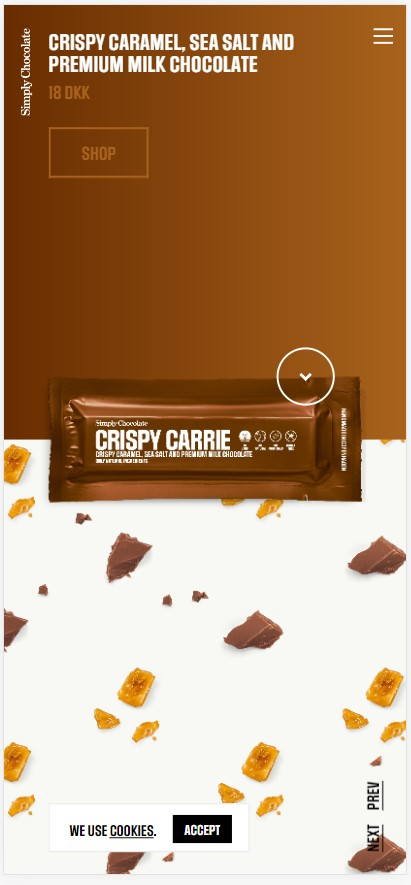
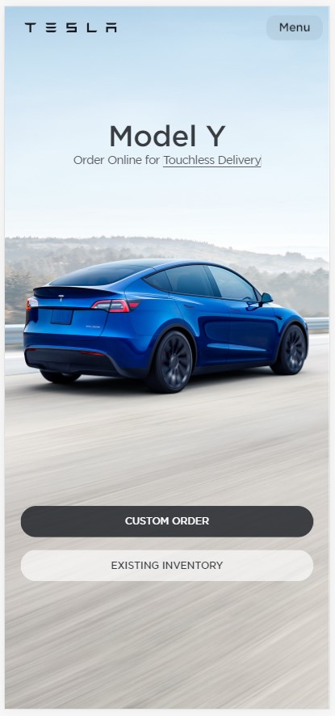
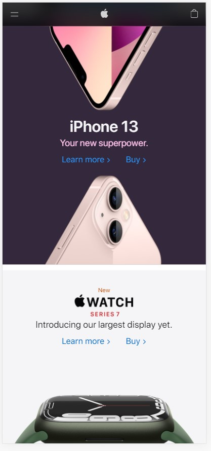

Visual Heirarchy
Simply Chocolate
www.simplycholcolate.dk 
Visual Heirarchy is the body language of design. Without explicity labeling
it "most important" and "least important", we can use various indirect, subtle
methodologies to communicate our priorities for those engaging with our design.
Size, color, contrast, texture, and white space draw our eye and guide from the most
obvious to the more inconspicuous. Taking advantage of human pattern recognition
alignment (or lack thereof), repetition, and proximity can imply connections and
importance by drawing attention to them.
Simply Choclolate excels at emphasizing focus on their product by setting it as the
largest element sitting centered over the line the line of contrast separating the
top and bottom halves of the page. After being directed to the product, the eye
drifts to the "shop" button, titles, and links. Simple, but effective.
Hick's Law
Tesla
www.tesla.com 
Boiled down Hick's law is the measure of time it will take for an individual to
reach a decision as a function of the amount of elements to choose from, and simultaneous
occurring tasks. According to Hick's law, one can reduce reaction times by decreasing the
number of elements to choose from. Since designers cannot control what tasks a person
engaging with their design may be juggling, we can incorporate minimized elements.
Tesla adhers to this law beautifully by pragmatically limiting choices yet maintaining an
aesthetically pleasing and efficient website.
PARC: Contrast
Apple
www.apple.com 
Contrast in design can be argued as one of, if not the, most important part of a design.
Text that is the same color as the background is invisible. A busy image can make
overlapping elements difficult to see. Inversely, high contrast can effectively focus that
people are not even aware of how their eyes are naturally going to where the designer wants
to place them.
Apple demonstrates contrast on their website with their products and text. On the upper part
half of the image, has a deep purple background with lighter phone models angled in a way that the
contrast forms leading lines to the light colored text. Conversely, the lower half has a dark
product with dark text. A very effective use of contrast.